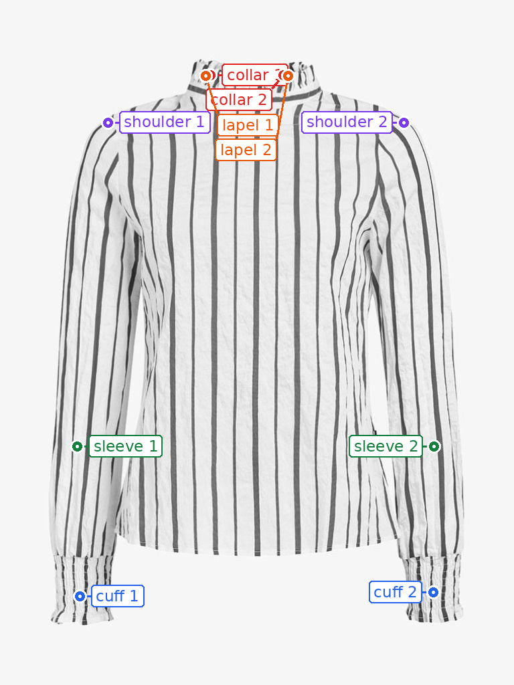

Molmo points on one flatlay
Original Molmo-7B-D-0924, using the paper’s top ten component names. Dots are the returned coordinates: no SAM3 masks and no manual coordinate edits.
Original flatlay · 05504_00 Molmo’s returned points
Molmo’s returned points
Visible error: this blouse has a ruffled collar, not lapels. Molmo’s two lapel detections are false positives at the collar. All coordinates remain exactly as returned. This is one example, not a ten-category accuracy benchmark.
10 returned points: collar ×2, lapel ×2, cuff ×2, sleeve ×2, shoulder ×2. No points returned for button hole, button, pocket, zipper, logo.
Open full-size labeled image · Raw responses and normalized XY coordinates
Model and coordinate format
allenai/Molmo-7B-D-0924 · cab33fb7f1a40091911f81165f8481920621948f. Each component receives “Point to all the … on the garment.” Coordinates are normalized to [0,1] relative to the original image, matching the trained DINO expert’s point-coordinate convention. No DINO or VTON training ran for this example.